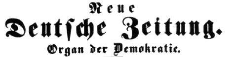

Works of Karl Marx 1849

Source: MECW Volume 9, p. 473;
Statement published: in Neue Deutsche Zeitung Nos. 129 and 133, June 2 and 7, 1849; and in the Neue Kölnische Zeitung No. 126 (second edition), June 3, 1849;
The esteemed Editorial Board of the Frankfurter Journal is requested to print the following statement in its newspaper in large type and in a prominent position, and if this is only possible on payment for its insertion, please obtain the amount from Herr J. Weydemeyer, editor of the Neue Deutsche Zeitung.
Bingen, May 31
Dr. Karl Marx
The Editorial Board of the “Neue Rheinische Zeitung” owes its correspondents and the public the statement that it has nothing in common with the news-sheet published in Cologne under the title Westdeutsche Zeitung. The undersigned editorial board reserves to itself the right to communicate further when and where the Neue Rheinische Zeitung will again make its appearance.
The Editorial Board of the Neue Rheinische Zeitung Karl Marx, Ernst Dronke, Friedrich Engels, F. Freiligrath, Georg Weerth, F. Wolff, W. Wolff